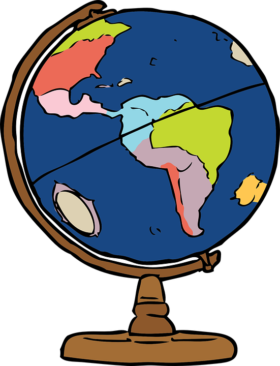

University of Auckland
2016 Semester 2 / Geography 771:
Spatial Analysis and Geocomputation
Home
Lab 2
Lab 3
Lab 4
Lab 5
This map is produced in Carto using open source Seattle cycle collision data. It is a torque cat map that shows the cumulative distribution of cyclist collisions from 2006-2016.